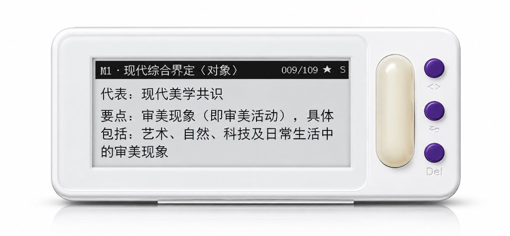
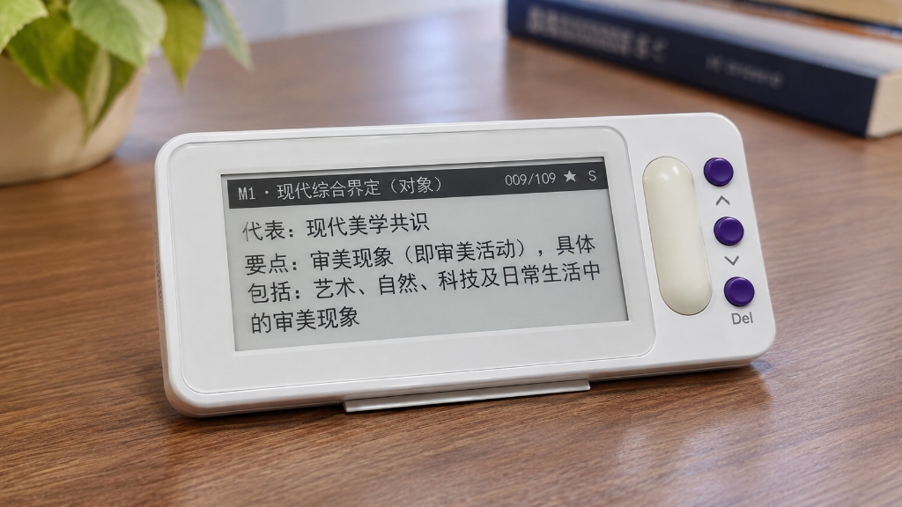

偶然捡到一块废弃的 2.9 寸无线电子标签（类似商超里的电子价签）。原本的系统早已用不上了，但通电一看，这块黑白墨水屏依然完好。
墨水屏最大的魅力就是断电不消失、无背光不伤眼、功耗低到几乎可以忽略。扔了实在可惜，不如给它找份新工作——正好手头有一堆需要死记硬背的文字考点，干脆把它改造成一个摆在桌角的超低功耗随身背题器。
一、盘点“家底”：这块板子藏了哪些资源？
拆开外壳顺着线路摸了一遍，发现这块小板子的硬件底子其实相当扎实：
- 大脑：一颗主打超低功耗的
STM32L051C8T6单片机，虽然只有 8KB 内存，但休眠电流低至微安级。 - 面子：一块 2.9 寸黑白墨水屏（296×128 分辨率），白底黑字，清晰得像印刷纸。
- 仓库：一颗 2MB 的外部存储芯片（
25Q16），而且自带独立的电源开关控制，不用时可以彻底断电省电。 - 交互：外壳右侧自带功能按键和一条长条形指示灯窗，内部藏着 4 组独立按键和一颗红绿蓝三色 RGB 指示灯。
- 隐藏技能：板子上还焊了一颗 433MHz 远距离无线射频芯片（
A7139），第一版先让它“休眠待命”。
二、构思与实现：把苦活交给电脑，单片机只管省电翻页
硬件只有 8KB 内存，想直接在单片机里做中文字库解析、自动换行和表格排版，既费劲又容易把内存撑爆。既然是自己用，干脆换个思路——把排版渲染全交给电脑，单片机只管当个纯粹的“翻页机器”。
- 资料变卡片：在电脑上写了个小脚本，直接把 Word 里的复习表格自动拆分成一张张 296×128 的黑白位图卡片。整套复习资料最终浓缩成了 109 页精华卡片，只占用了 2MB 存储空间的不到四分之一，以后再塞几门课进来也绰绰有余。
- 专属烧录通道：给外部存储芯片配了个一键烧录通道，以后想换背诵科目，插上线十几秒就能把新资料刷进去。
- 极简流式刷屏：单片机唤醒后，一小块一小块把图片从存储里读出来送进屏幕，刷完立刻给存储芯片彻底断电，全程几乎不占内存，也不浪费一点电。
三、最终成品：它现在能干什么？
改造装壳后，它变成了一个摆在桌上毫无违和感的极简学习小摆件：

- 每 15 分钟自动“投喂”一页：不需要人去管它，放在书桌或工位上，每隔 15 分钟它会自动醒来，随机换上一页新考点。工作间隙抬头瞥一眼，顺手就记一条，主打一个“润物细无声”。
-
顺手的四键盲操 + 灯光反馈：
- 上一页 / 下一页（
K3 / K5）：想主动刷题时随时翻页，伴随蓝灯轻闪一下； - 收藏难点（
K4）：遇到老记不住的硬骨头，按一下收藏，绿灯亮起确认，屏幕右上角同步点亮星标★，进度和收藏列表直接存进芯片内部，断电重启也不丢； - 取消收藏（
K1 / K2）：背熟了就一键移出，红灯轻闪提示。
- 上一页 / 下一页（
- 15 秒无操作自动休眠：翻完页放回桌上，15 秒没动静它就自动进入深度睡眠。屏幕画面稳稳停在那里，整机几乎不耗电，续航论月算。
四、最有趣的地方与未来彩蛋
用了一阵子发现，它比手机背题软件舒服太多了——没有弹窗、没有消息打扰、不发光也不刺眼，就像一张会自动翻页的实体便利贴。把一块原本要进垃圾桶的电子标签救活，看着它在桌上安安静静地每 15 分钟翻一次页，这种“物尽其用”的快乐，大概就是折腾硬件最大的魅力。

下一阶段的彩蛋：
板子上那颗还没启用的 433MHz 无线芯片 依然在沉睡。等哪天手痒了，打算给它配个电脑端的小发射器，直接升级成无线远程推送版——不用插线就能隔空更新背诵资料，甚至改成工位状态牌、无线留言板，一块小板子还能玩出不少花样。
板子上那颗还没启用的 433MHz 无线芯片 依然在沉睡。等哪天手痒了，打算给它配个电脑端的小发射器，直接升级成无线远程推送版——不用插线就能隔空更新背诵资料，甚至改成工位状态牌、无线留言板，一块小板子还能玩出不少花样。